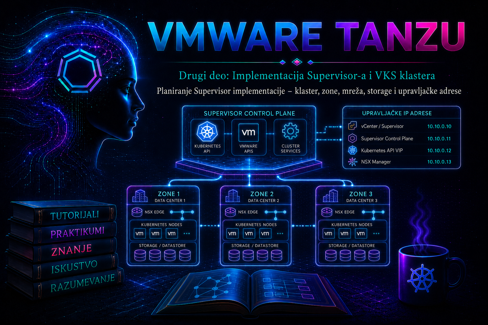

VMware & Tanzu

Prethodna lekcija pretvorila je readiness assessment u odluku da li organizacija sme da započne implementaciju. Ova lekcija tu odluku prevodi u izvršiv i proverljiv dizajn: bira se vSphere klaster ili skup zona, određuju se failure domain-i, rezervišu resursi i IP adrese, potvrđuju mrežni putevi i load balancer, mapiraju storage politike i definišu kriterijumi za zaustavljanje promene. Tek kada su te stavke dokumentovane i nezavisno proverene, administrator treba da pređe na omogućavanje Supervisor-a iz naredne lekcije.
Plan nije snimak ekrana popunjenog čarobnjaka. On je ugovor između platformskog, vSphere, mrežnog, storage, bezbednosnog i aplikacionog tima: za svako polje mora postojati vlasnik, izvor istine, dokaz da je vrednost slobodna i podržana, posledica eventualne promene i način oporavka. Posebno treba razlikovati one-zone Supervisor, koji koristi jedan vSphere klaster, od three-zone Supervisor topologije, u kojoj su tri vSphere klastera mapirana na tri vSphere Zone objekta. Zona je planski failure domain; nije sinonim za VLAN, rack, datastore niti Kubernetes namespace.
Ciljevi lekcije i granica odgovornosti
Po završetku lekcije administrator treba da ume da izradi odobren Supervisor deployment workbook, dokaže usklađenost izabranih resursa sa aktuelnom Broadcom Compatibility Guide i dokumentacijom za tačan vSphere/VCF build, obrazloži izbor mrežnog modela i topologije, izračuna IP kapacitet bez preklapanja, potvrdi SPBM kompatibilnost i definiše rollback granicu. Ova lekcija ne aktivira Workload Management, ne kreira produkcione namespace-e i ne iscrpljuje kasnije teme VKS mreže, storage-a i životnog ciklusa.
Od poslovnog zahteva do arhitektonske odluke
Najpre se definišu workload profili: broj očekivanih VKS klastera, najveći broj control plane i worker VM-ova, potrebni Kubernetes servisi tipa LoadBalancer, očekivani broj namespace-a, vrste persistent volume-a, zahtevi za enkripciju, RPO/RTO, zone dostupnosti i rast u narednih 12–24 meseca. Bez ovih podataka izbor veličine Supervisor control plane-a, adresnih opsega i storage politika ostaje nagađanje.
| Odluka | Dokaz pre implementacije | Posledica pogrešnog izbora |
|---|---|---|
| One-zone ili three-zone | Mapirani failure domain-i, kapacitet tokom održavanja i podržana topologija | Lažan osećaj dostupnosti ili prevelika operativna složenost |
| NSX ili vSphere networking | Podržani build-ovi, load balancer, routability, firewall i operativna znanja | Nedostupni servisi, preklapanje opsega ili dizajn koji se teško menja |
| Control plane veličina | Workload profil, zvanične sizing vrednosti i slobodan HA kapacitet | Throttling i nestabilnost ili nepotrebno rezervisani resursi |
| Management i workload IP plan | IPAM rezervacija, DNS/NTP testovi, ruta i firewall matrica | Implementacija ostaje u stanju Configuring ili dolazi do konflikta adresa |
| SPBM politike | Kompatibilni datastore-i, fault tolerance, kapacitet i performanse | Control plane ili workload diskovi ne mogu da se postave ili ostanu non-compliant |
Izbor klastera, zona i failure domain-a
Izabrani vSphere klaster mora biti zdrav, podržan, licenciran i konfigurisan tako da HA i DRS mogu da održavaju Supervisor control plane VM-ove tokom kvara i planiranog održavanja. DRS ne treba posmatrati samo kao optimizator performansi: on je deo mehanizma placement-a. Broadcom zahtevi za zonalne topologije traže odgovarajući DRS režim, a konkretne vrednosti i minimalan broj hostova proveravaju se za ciljnu verziju. Produkcioni dizajn mora imati dovoljno slobodnog kapaciteta da preživi definisani failure domain i istovremeno omogući maintenance mode bez gašenja platforme.
Three-zone Supervisor nije jednostavno „veći klaster”. Tri odvojena vSphere klastera predstavljaju tri zone, sa nezavisnim resursima i pažljivo projektovanim mrežnim i storage zavisnostima. Zvanična dokumentacija za vSphere 8 zonalne topologije preporučuje najmanje tri hosta po zoni; za vSAN se u relevantnim konfiguracijama zahteva ili preporučuje dodatni host radi održavanja i quorum-a. Tačan minimum ne prepisuje se iz ove lekcije u change record, već se potvrđuje za stvarnu kombinaciju vSphere, vSAN, NSX/Avi i hardvera.
- One-zone je razuman izbor za laboratoriju, manju platformu ili kada aplikaciona dostupnost postoji iznad infrastrukturnog sloja, ali kvar celog vSphere klastera ostaje zajednički failure domain.
- Three-zone povećava otpornost na kvar zone, ali zahteva simetrično planiranje kapaciteta, mreže, storage-a, operacija i testiranja. Ne rešava automatski backup, aplikacionu replikaciju ni katastrofu vCenter domena.
- vSAN stretched cluster i three-zone Supervisor nisu ista topologija. Stretched cluster ima sopstvena pravila fault domain-a, witness-a, storage politike i failure scenarije; ne sme se modelovati kao tri nezavisne zone bez eksplicitne podrške.
Kontrola kapaciteta i placement-a
Plan kapaciteta obuhvata Supervisor control plane VM-ove, VKS node VM-ove, platform services, load balancer komponente, image/content library saobraćaj, persistent volume-e i rezervu za oporavak. Prosečna iskorišćenost nije dovoljan podatak. Potrebno je dokazati scenario N+1 ili stroži poslovni cilj: nakon gubitka najvećeg hosta ili cele zone, preostali resursi moraju da prime kritične workload-e bez kršenja HA admission control politike.
Veličina Supervisor control plane-a bira se iz zvanično ponuđenih sizing profila za izdanje. Na primer, vSphere 8 dokumentacija za određene three-zone postupke prikazuje profile Tiny, Small, Medium i Large, ali njihove CPU/RAM vrednosti i granice nisu univerzalna konstanta. Zabeležiti izabrani profil, razlog, procenjeni broj objekata i datum ponovne procene. Promena profila posle aktivacije može biti podržana, ali nije zamena za početno planiranje.
Mrežni model: NSX ili vSphere networking
Mrežni model je jedna od najteže promenljivih odluka. NSX networking obezbeđuje integrisan overlay, rutiranje, segmentaciju i automatizaciju mreža za Kubernetes objekte, uz zavisnost od ispravno projektovanog NSX transportnog i edge sloja. vSphere networking koristi vSphere Distributed Switch port grupe i spoljašnji load balancer podržan za izdanje; jednostavniji je tamo gde NSX nije uveden, ali zahteva eksplicitnije IPAM, VLAN, rutiranje i adresne pool-ove. Izbor se ne svodi na licencu: procenjuju se bezbednosni model, broj tenant-a, operativne veštine, troubleshooting granice i budući rast.
| Oblast | NSX model | vSphere networking model |
|---|---|---|
| Osnovni dataplane | NSX transport nodes, overlay/VLAN segmenti i Edge funkcije | vSphere Distributed Switch i distributed port groups |
| Load balancing | Zavisi od podržane NSX/Avi integracije za izdanje | Spoljašnji load balancer, istorijski i HAProxy u podržanim vSphere 7/8 scenarijima; aktuelnu matricu obavezno proveriti |
| Segmentacija | Dublja integracija sa NSX politikama i topologijom | VLAN/routed segmentacija i kontrole van Kubernetes sloja |
| Operativni rizik | Više međuzavisnih NSX komponenti i logova | Veća zavisnost od ručnog IPAM-a, ruta i tačne konfiguracije port grupa |
| Pre-change dokaz | Transport node, TEP, Edge, Tier-0/Tier-1 i routing zdravlje | vDS članstvo, VLAN reachability, MTU, load balancer API/data plane i pool kapacitet |
NCP, NSX-T ili HAProxy parametre koji nisu preporučeni ili dostupni u svim aktuelnim izdanjima. Ne kopirati istorijski Enable-WMCluster primer bez poređenja sa sintaksom instaliranog VCF PowerCLI modula i dokumentacijom ciljnog build-a.
Mrežne ravni i adresni plan
Plan mora razdvojiti najmanje management mrežu Supervisor control plane-a, workload/node mreže, Kubernetes Pod CIDR, Service CIDR, ingress/load-balancer opsege i egress/SNAT opsege kada ih model koristi. Ove ravni mogu fizički deliti infrastrukturu u malom laboratorijskom okruženju, ali moraju ostati logički dokumentovane. U produkciji treba težiti jasnim sigurnosnim zonama, routability pravilima i vlasništvu nad svakim opsegom.
| Opseg ili mreža | Namena | Ključna provera |
|---|---|---|
| Management network | Interfejsi Supervisor control plane VM-ova i floating/VIP adresa | Rezervisan blok, gateway, DNS, NTP, MTU i bidirekcioni putevi ka vCenter/ESXi zavisnostima |
| Workload/node network | VKS node VM-ovi i/ili namespace mreže | VLAN/segment, DHCP ili statički pool, ruta, DNS i bezbednosna pravila |
| Pod CIDR | Adrese Pod-ova u modelima koji ih eksplicitno dodeljuju | Bez preklapanja sa data-centar, VPN, Service, ingress i egress mrežama |
| Service CIDR | Virtuelne ClusterIP adrese Kubernetes servisa | Jedinstven i dovoljan opseg; promena kasnije može biti veoma invazivna |
| Ingress/LB pool | Virtuelne adrese servisa tipa LoadBalancer i ingress-a | Routability, IPAM vlasništvo, ARP/BGP način oglašavanja i rezervni kapacitet |
| Egress/SNAT pool | Izvorne adrese odlaznog saobraćaja | Firewall identitet, NAT kapacitet i bez preklapanja |
Pet upravljačkih adresa nisu pet proizvoljnih unosa
Za statički management način relevantni Supervisor postupci rezervišu blok od pet uzastopnih IP adresa: adrese za tri control plane VM-a, floating adresu Kubernetes API-ja i adresu koja se koristi tokom rolling update/određenih životnih ciklusa. Čarobnjak obično traži početnu adresu i veličinu opsega, ali IPAM mora rezervisati ceo blok. Adrese ne smeju biti u DHCP pool-u, već korišćene, NAT-ovane na neočekivan način ili filtrirane između control plane-a, vCenter-a i administratorskih klijenata.
Primer planske rezervacije — ne predstavlja univerzalnu adresaciju
Management VLAN: 10.40.13.0/24
Gateway: 10.40.13.1
Rezervisani blok: 10.40.13.50–10.40.13.54
DNS A zapis API-ja: supervisor-api.lab.example → 10.40.13.53
Vlasnik rezervacije: IPAM-REQ-2026-013Ne pretpostavljati koja će tačno pozicija u bloku biti VIP bez provere čarobnjaka i verzijske dokumentacije. DNS zapis se kreira tek kada je potvrđena stvarno dodeljena floating adresa. Forward i reverse rezolucija, dozvoljeni karakteri FQDN-a, sertifikati i NTP izvori moraju biti usklađeni pre promene.
Izračunavanje kapaciteta i preklapanja
Za svaki pool zapisati mrežu, masku/prefix, prvi i poslednji upotrebljivi host, rezervisane adrese, očekivanu potrošnju, prag upozorenja i proceduru proširenja. CIDR vizuelno sličan drugom nije dokaz da se ne preklapa. Provera se može obaviti lokalnim Python-om; komanda je read-only i ne kontaktira infrastrukturu:
from ipaddress import ip_network
networks = {
"service": ip_network("10.96.0.0/24"),
"pods": ip_network("10.244.0.0/21"),
"ingress": ip_network("10.40.20.0/27"),
"egress": ip_network("10.40.21.0/27"),
}
names = list(networks)
for index, left_name in enumerate(names):
for right_name in names[index + 1:]:
left = networks[left_name]
right = networks[right_name]
print(f"{left_name:8} / {right_name:8}: {left.overlaps(right)}")Očekivani rezultat je False za svaki par. To ipak nije kompletna validacija: iste mreže treba uporediti sa korporativnim LAN/WAN rutama, VPN pool-ovima, drugim Kubernetes klasterima, cloud VPC/VNet mrežama i planiranim akvizicijama. IPAM ili mrežni source of truth ima prednost nad lokalnom tabelom.
DNS, NTP, MTU, routing i firewall kao zavisnosti plana
Lekcija 11 objasnila je zašto DNS i NTP nisu pomoćni servisi. Ovde ih vezujemo za konkretan deployment plan. Supervisor control plane, vCenter, ESXi hostovi, NSX/Avi ili drugi podržani load balancer i administratorski klijenti moraju imati konzistentnu rezoluciju i vreme. Vremenski pomak može oboriti SAML/token razmenu i proizvesti naizgled mrežni bad gateway simptom; zato se NTP meri, a ne samo navodi kao konfigurisan.
Firewall matrica se pravi po izvoru, odredištu, protokolu, portu, smeru, poslovnoj nameni i vlasniku pravila. Ne otvara se široko „any-any za Kubernetes” kao trajno rešenje. Portovi se preuzimaju iz zvanične port reference za ciljnu verziju i mrežni model. Test ping ne dokazuje TCP dostupnost, DNS, MTU ni povratnu rutu.
# Read-only testovi sa odobrene administratorske Linux stanice
dig +short supervisor-api.lab.example A
dig +short -x 10.40.13.53
nc -vz supervisor-api.lab.example 6443
tracepath supervisor-api.lab.examplePre aktivacije API adresa možda još ne sluša na portu 6443; tada je očekivano da TCP test ne uspe. U planu se unapred zapisuje kada test postaje važeći. tracepath može ukazati na PMTU problem, ali rezultat zavisi od ICMP politike. MTU mora biti konzistentan duž celog relevantnog puta, naročito kod overlay mreža; jumbo frame vrednost na vDS-u sama po sebi nije dokaz end-to-end funkcionalnosti.
Load balancer i sever–jug saobraćaj
Load balancer nije samo appliance koji „radi”. Plan mora obuhvatiti management/API dostupnost, data plane mrežu, virtual service pool, način oglašavanja VIP adresa, sertifikat i trust chain, health monitore, SNAT ponašanje, logove, HA topologiju i operativnog vlasnika. Proverava se kompatibilnost tačne verzije load balancer-a sa vSphere build-om i izabranim networking modelom.
- Rezervisati dovoljno VIP adresa za Supervisor i očekivane VKS servise, uz rast i servisne rezerve.
- Dokazati put od klijenta do VIP-a i od load balancer data plane-a do backend mreža.
- Dokumentovati ko rotira sertifikate i koliko ranije se alarmira istek.
- Razdvojiti privremeni laboratorijski HAProxy scenario od produkcionog dizajna; istorijska podrška ne znači da je isti izbor preporučen za novo izdanje.
Storage arhitektura i SPBM politike
Supervisor ne bira datastore po nazivu iz administratorske beleške, već koristi vSphere Storage Policy Based Management (SPBM). Politika opisuje zahtev, a vCenter izračunava kompatibilne datastore-e. Pre aktivacije kreiraju se i validiraju politike potrebne za Supervisor control plane i druge kategorije koje konkretno izdanje prikazuje, kao što su ephemeral i image storage. Politike koje će se dodeljivati namespace-ima i VKS klasterima planiraju se odvojeno prema workload zahtevima.
| Namena politike | Šta se proverava | Operativna posledica |
|---|---|---|
| Supervisor control plane | Dostupnost svim potrebnim hostovima/zonama, failure tolerance, latencija, kapacitet | Direktno utiče na dostupnost upravljačke ravni |
| Ephemeral storage | Performanse i kapacitet za privremene diskove prema izdanju | Pritisak na storage može destabilizovati platform services |
| Image storage/content | Kapacitet, throughput i lifecycle slika | Sporo povlačenje ili nedostupnost slika produžava provisioning |
| Namespace/VKS persistent storage | CSI podrška, topology awareness, binding mode, backup i RPO/RTO | Pogrešna politika može vezati volumen za pogrešnu zonu ili dati nedovoljnu otpornost |
Kod three-zone Supervisor-a zonal storage znači da je datastore dostupan svim hostovima unutar jedne zone, uz politiku koja omogućava pravilno topology-aware postavljanje. Datastore koji je slučajno vidljiv hostu nije dovoljan dokaz. Treba potvrditi da su politika, tagovi/capability pravila, CSI topologija i failure ponašanje usklađeni. Replicirani storage preko zona može biti potreban za određene workload-e, ali to je odluka storage proizvoda i aplikacionog RPO/RTO dizajna, ne automatsko svojstvo Kubernetes PVC-a.
Read-only PowerCLI inventar pre promene
Sledeći primer se izvršava sa administratorske radne stanice na kojoj je instaliran modul VMware/VCF PowerCLI. Koristi nalog sa pravima čitanja inventara, DRS/HA, mreže i SPBM politika. Komande ne menjaju stanje; izlaz treba sačuvati kao vremenski označen deployment dokaz.
$vCenter = "vcsa.lab.example"
$ClusterName = "Compute-01"
$VdsName = "VDS-Workload"
Connect-VIServer -Server $vCenter
$cluster = Get-Cluster -Name $ClusterName
$cluster | Select-Object Name, HAEnabled, DrsEnabled, DrsAutomationLevel
Get-VMHost -Location $cluster |
Select-Object Name, ConnectionState, PowerState, Version, Build,
@{N="CpuFreeGHz";E={[math]::Round($_.CpuTotalMhz / 1000 - $_.CpuUsageMhz / 1000, 1)}},
@{N="MemoryFreeGB";E={[math]::Round($_.MemoryTotalGB - $_.MemoryUsageGB, 1)}}
Get-VDSwitch -Name $VdsName | Select-Object Name, Version, Mtu
Get-VDPortgroup -VDSwitch $VdsName |
Select-Object Name, VLanConfiguration, NumPorts
Get-SpbmStoragePolicy -Requirement |
Select-Object Name, Description
Disconnect-VIServer -Server $vCenter -Confirm:$falseIzlaz nije automatska potvrda podrške. Na primer, HAEnabled=True ne dokazuje ispravan admission control, a naziv storage politike ne dokazuje kompatibilnost. Za svaku planiranu politiku u vSphere Client-u proveriti Storage Compatibility, slobodan kapacitet, alarme, resync/rebuild stanje i očekivano ponašanje pri gubitku hosta ili zone.
Content Library, slike, sertifikati i identitet
Plan uključuje pretplaćenu ili lokalnu Content Library koja sadrži podržane VKS/Kubernetes release slike za ciljnu verziju. Proveravaju se sync status, pristup URL-u, proxy, sertifikat izdavača, datastore kapacitet i vlasništvo nad ažuriranjem. „Library postoji” nije dokaz da sadrži kompatibilnu sliku ili da svi potrebni endpoint-i mogu da joj pristupe.
Identitet i sertifikati se projektuju pre instalacije: administratorske i servisne uloge, najmanji potreban skup privilegija, SSO/identity provider integracija, FQDN-ovi u SAN poljima, trust chain, datum isteka i procedura rotacije. Privremeno prihvatanje nepouzdanog sertifikata može biti laboratorijska dijagnostika, ali nije produkcioni završetak.
Deployment workbook i odluka go/no-go
Jedan kontrolisani workbook predstavlja source of truth. Svaka vrednost ima status Planned, Reserved, Validated ili Blocked; samo poslednja odobrena verzija ulazi u change record. Minimalna polja su:
- vCenter FQDN, SSO domen, verzija/build i licenca;
- nazivi klastera, hostovi, zone, HA/DRS i failure-domain cilj;
- Supervisor sizing profil i kapacitet posle simuliranog kvara;
- networking model, vDS/NSX objekti, VLAN/segmenti, MTU i uplink redundansa;
- management blok od pet adresa, gateway, DNS/NTP i svi workload/Pod/Service/ingress/egress opsezi;
- load balancer verzija, management/data plane adrese, pool-ovi, route advertisement i sertifikati;
- SPBM politike, kompatibilni datastore-i, kapacitet, performanse i topology pravila;
- Content Library, image registry/proxy zavisnosti i kompatibilne slike;
- firewall matrica, vlasnici, odobrenja, change window, komunikacija i rollback granica.
Praktikum: izrada i tehnička odbrana Supervisor deployment plana
Scenario, cilj i topologija
Tim priprema one-zone Supervisor na klasteru Compute-01 sa vSphere Distributed Switch mrežom i podržanim spoljašnjim load balancer-om. Cilj nije aktivacija, već dokaz da je dizajn spreman za change advisory review. Napredna varijanta proširuje isti workbook na tri zone zone-a, zone-b i zone-c bez pretpostavke da su resursi simetrični.
Preduslovi, privilegije i rizik
- vSphere Client pristup i read-only PowerCLI nalog; poseban nalog za buduću implementaciju ne koristi se u ovoj vežbi;
- pristup IPAM-u, DNS-u, firewall dokumentaciji, storage kapacitetu i Compatibility Guide-u;
- odobren naziv i FQDN standard, ciljna vSphere/VCF verzija i networking model;
- nema promene stanja u produkciji; jedini rizik je pogrešan zaključak, pa svaki nalaz mora imati izvor i vreme prikupljanja.
Vežba 1 – snimanje početnog stanja klastera
- U vSphere Client-u otvoriti klaster, proveriti Summary, Monitor → Issues and Alarms, HA/DRS konfiguraciju, host connection state i aktivne maintenance operacije.
- Pokrenuti read-only PowerCLI inventar iz prethodnog odeljka i sačuvati izlaz sa UTC vremenom, vCenter build-om i identitetom izvršioca.
- Izračunati preostali CPU/RAM posle gubitka najvećeg hosta. Posebno evidentirati rezervu za tri Supervisor control plane VM-a i planirane VKS node VM-ove.
- Za three-zone varijantu ponoviti korake po zoni. Razlika veća od dogovorenog praga postaje rizik; prosek preko tri zone ne prikriva slabu zonu.
Očekivani rezultat: svi hostovi su povezani i podržani, nema kritičnih alarma, HA/DRS su u zahtevanom režimu i kapacitet zadovoljava failure scenario. Validacija: GUI i PowerCLI podaci se slažu, a svako odstupanje ima vlasnika i rok. Ako rezultat nije zadovoljen, ne uključivati HA/DRS u ovoj vežbi bez odobrenja; otvoriti infrastrukturni remediation zadatak.
Vežba 2 – IPAM, DNS i mrežna matrica
- Rezervisati pet uzastopnih management adresa kao jedan atomski IPAM zahtev. Dokumentovati gateway, prefix, VLAN/segment i owner-a.
- Uneti Pod, Service, ingress i egress opsege koje zahteva izabrani model. Pokrenuti Python proveru preklapanja i zatim zahtevati mrežnu proveru prema globalnoj routing tabeli.
- Proveriti forward/reverse DNS za postojeće zavisnosti i NTP izvore. Budući API FQDN označiti kao
Reserved—not activedok VIP nije dodeljen. - Izraditi firewall tabelu i potvrditi svaki put pomoću odgovarajućeg TCP/DNS testa sa relevantnog izvora. Ne smatrati test sa administratorskog laptopa dokazom za ESXi ili load balancer subnet.
- Za overlay model potvrditi MTU na svim hop-ovima i NSX/Edge zdravlje; za vSphere networking potvrditi vDS članstvo svih hostova, VLAN trunk i load balancer data plane put.
Očekivani rezultat: nema preklapanja, sve rezervacije imaju ticket, putevi i portovi imaju dokaz, a IP kapacitet uključuje rast. Bezbedna korekcija: ako je opseg pogrešan, promeniti workbook i IPAM rezervaciju pre implementacije. Ne pokušavati NAT ili privremeni host route da bi se prikrio loš dizajn.
Vežba 3 – dokaz SPBM kompatibilnosti i failure ponašanja
- U Policies and Profiles → VM Storage Policies otvoriti planiranu Supervisor politiku i pregledati pravila, kompatibilne datastore-e i compliance.
- Za svaki kompatibilni datastore zabeležiti tip, ukupni/slobodni kapacitet, latenciju/alarme, pristup hostova i aktivne resync/rebuild operacije.
- Za zonalni dizajn dokazati koja politika pripada kojoj zoni i kako CSI placement sprečava pogrešno postavljanje volumena.
- Uporediti zaštitu politike sa poslovnim RPO/RTO. RAID/FTT nije backup; planirati zasebnu zaštitu konfiguracije i podataka u kasnijim lekcijama.
Očekivani rezultat: politika vraća očekivane kompatibilne datastore-e i ostavlja dovoljno prostora posle planiranog rasta i kvara. Rollback: pošto je vežba read-only, nema infrastrukturnog rollback-a. Ako je radi laboratorije kreirana probna politika, ukloniti je tek nakon provere da nije dodeljena nijednom objektu; u produkciji to zahteva poseban change.
Vežba 4 – tabletop greška i troubleshooting grane
Reviewer namerno menja jedan podatak u kopiji workbook-a: management blok se preklapa sa DHCP pool-om, jedna zona nema pristup planiranom datastore-u ili NTP server nije dostupan iz control plane mreže. Tim ne zna unapred koja je greška.
- Simptom: definisati šta bi čarobnjak, task ili kasniji servis mogao prikazati, bez proglašavanja uzroka.
- Obim i posledica: utvrditi da li je pogođena jedna adresa, control plane, jedna zona ili ceo deployment.
- Dokazi: uporediti poslednju odobrenu verziju, IPAM/DHCP lease-ove, DNS/NTP testove, vCenter događaje, datastore connectivity i load balancer alarme.
- Hipoteza: formulisati proverljivu tvrdnju, na primer: „Adresa
10.40.13.52je izdata DHCP klijentu pre rezervacije.” - Korekcija: u planskoj fazi izabrati čist blok ili ispravnu politiku; ne gasiti tuđi workload i ne širiti firewall bez vlasnika.
- Validacija: ponoviti tačno isti test, proveriti susedne zavisnosti i ažurirati decision log.
| Simptom | Neposredni uzrok | Osnovni uzrok | Privremeno rešenje | Trajna mera |
|---|---|---|---|---|
| IP konflikt tokom inicijalizacije | Adresa već odgovara/ima lease | IPAM i DHCP granice nisu usaglašene | Zaustaviti change pre aktivacije | Atomska rezervacija bloka i nezavisna pre-check provera |
| Zona nema kompatibilan datastore | Politika ne mapira dostupan storage | Pogrešan tag/capability ili asimetričan dizajn | Ne koristiti zonu | Ispraviti storage arhitekturu i ponoviti compliance test |
| Token ili login greška posle aktivacije | Vreme nije sinhronizovano | Različiti ili nedostupni NTP izvori | Kontrolisano resinkronizovati pogođenu komponentu | Jedinstveni redundantni NTP dizajn, monitoring i alarm |
Vežba 5 – change paket, rollback granica i kriterijum završetka
Change paket treba da sadrži odobren workbook, eksport read-only dokaza, Compatibility Guide rezultat, firewall/IPAM/DNS tikete, storage compliance snimak, komunikacioni plan i preciznu stop tačku. Pre pokretanja aktivacije rollback je uglavnom jednostavan: ne započeti task i ispraviti plan. Kada Workload Management počne da kreira control plane VM-ove i mrežne objekte, rollback više nije ručno brisanje pojedinačnih komponenti. Koristi se dokumentovana procedura za ciljno izdanje i eskalacija prema Broadcom podršci ako je stanje delimično konfigurisano.
Kriterijum završetka praktikuma: drugi administrator, koji nije učestvovao u izradi, može samo iz change paketa da pronađe svaki cilj, proveri svaku rezervaciju, ponovi read-only testove, objasni failure ponašanje i donese istu go/no-go odluku. Sama uredno popunjena tabela bez ponovljivih dokaza nije prolaz.
Administratorske prakse
- Zaključati verziju dokumentacije uz stvarni product build; ne planirati prema generičkom „vSphere 8”.
- Držati IPAM, DNS, CMDB i deployment workbook usklađene; jedan sistem mora biti autoritativan za svaku vrstu podatka.
- Odvojiti read-only pre-check nalog od privilegovanog naloga kojim se izvršava promena.
- Kapacitet dokazivati pod kvarom i tokom održavanja, ne samo u normalnom stanju.
- Ne menjati CIDR, networking model ili zonalnu topologiju kao „sitnu korekciju” tokom čarobnjaka; vratiti odluku na arhitektonski review.
- Čuvati UTC vremenske oznake i korelisati vCenter taskove, NSX/load balancer događaje, DNS/NTP nalaze i storage alarme.
- Automatizaciju tretirati kao kontrolisanu implementaciju verzionisanog dizajna, a ne kao način da se zaobiđu pre-check provere.
Završna kontrolna tačka
Lekcija je uspešno savladana kada administrator može da:
- obrazloži one-zone ili three-zone izbor i nacrta stvarne failure domain-e;
- dokaže HA/DRS, host, kapacitet i maintenance rezervu za svaki izabrani klaster;
- razlikuje management, workload, Pod, Service, ingress i egress adresne prostore i potvrdi da se ne preklapaju;
- objasni namenu bloka od pet management IP adresa i dokaže IPAM rezervaciju;
- uporedi NSX i vSphere networking prema podršci, bezbednosti, operacijama i rastu;
- poveže SPBM pravila sa kompatibilnim datastore-ima, zonama i failure ponašanjem;
- izvede read-only PowerCLI pre-check, protumači ograničenja rezultata i ne pomeša inventar sa potvrdom kompatibilnosti;
- prepozna no-go uslov, zaustavi change bez improvizacije i dokumentuje trajnu korektivnu meru.
Zaključak
Dobra Supervisor implementacija počinje pre prvog klika na Enable. Klaster, zona, mreža, load balancer, storage politika i upravljačka adresa nisu nezavisna polja, već delovi jedne upravljačke ravni čija dostupnost zavisi od najslabije veze. Administrator zato ne potvrđuje spremnost osećajem, već dokazima: kompatibilnim build-ovima, failure-domain analizom, IPAM rezervacijama, ponovljivim mrežnim testovima, SPBM compliance-om, kapacitetom pod kvarom i jasnom rollback granicom.
Sa odobrenim deployment workbook-om sledeća lekcija može bezbedno da pređe na omogućavanje vSphere Supervisor-a. Tamo će svaki izbor iz ove lekcije postati stvarni vCenter, mrežni i storage objekat, a kvalitet plana biće vidljiv kroz brzinu inicijalizacije, jasnoću dijagnostike i sposobnost tima da kontrolisano zaustavi ili oporavi promenu.